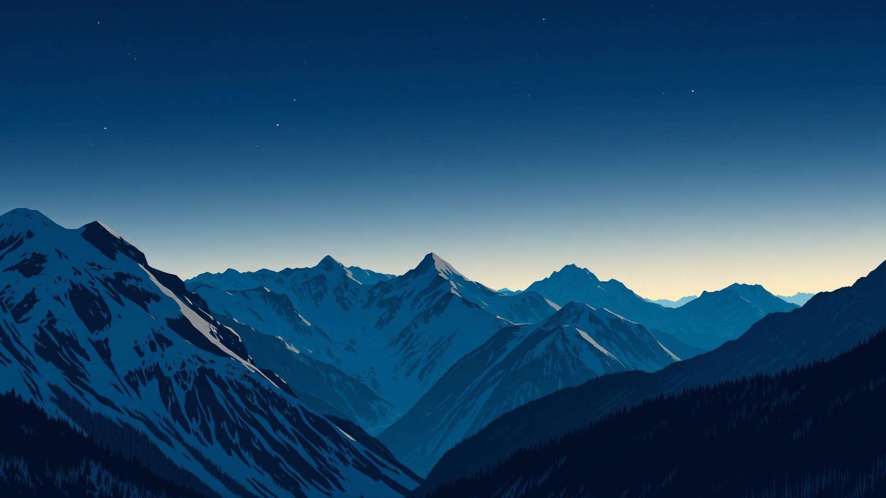

❄ Master Thesis · Cryosphere Remote Sensing
Integration of SAR and Optical Satellite Data for Delineation of Wet and Dry Snow in the Hohe Tauern National Park, Austria
A multi-sensor Earth observation study fusing Sentinel-1 SAR and Sentinel-2 optical imagery with Principal Component Analysis over the Austrian Alps, 2018–2025.
Presenter · Syeda Noor ul Saba Bukhari
Supervisor · Jan Brus — Palacký University Olomouc
Co-supervisor · Daniel Hölbling — Paris Lodron University Salzburg